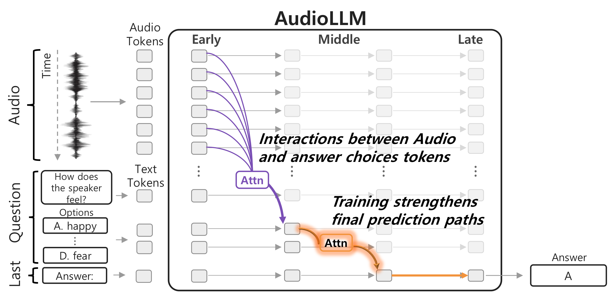
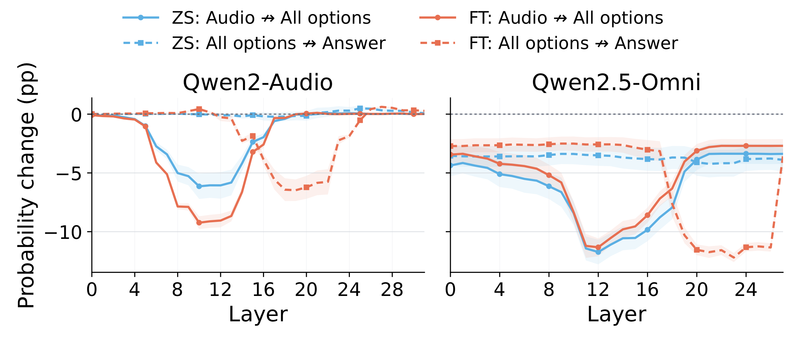

The trained model uses audio more
On every benchmark where accuracy improves, silence or unrelated audio causes a larger performance drop after training.
arXiv · Mechanistic Interpretability
Korea Advanced Institute of Science and Technology (KAIST)
Preprint · 2026
TL;DR
Connections from audio tokens to the textual answer choices are most important in early-to-middle layers. Training mainly strengthens how those audio-informed choices determine the final answer in middle-to-late layers.

Motivation
An Audio LLM can exploit clues in the question or answer choices and predict correctly without using the recording.
| Model | Dataset | Zero-shot acc. | Fine-tuned acc. | Δ Accuracy | Δ Audio sensitivity |
|---|---|---|---|---|---|
| Qwen2-Audio | ADQA | 36.9 | 51.1 | +14.3 | +9.3 |
| MMAR | 41.2 | 52.5 | +11.3 | +6.9 | |
| MMAU | 59.7 | 58.6 | −1.1 | −9.1 | |
| MMSU | 47.3 | 58.8 | +11.5 | +6.8 | |
| Qwen2.5-Omni | ADQA | 41.9 | 54.4 | +12.5 | +4.5 |
| MMAR | 53.7 | 65.7 | +11.9 | +6.7 | |
| MMAU | 77.0 | 63.5 | −13.5 | −7.1 | |
| MMSU | 54.1 | 64.9 | +10.9 | +6.0 |
Δ Audio sensitivity measures how much more performance drops without valid audio after training. All six improving settings become more audio-sensitive; MMAU is the negative-transfer exception.
Question
Does training improve how audio enters the answer choices, or how those choices control the final prediction?
Answer
On every benchmark where accuracy improves, silence or unrelated audio causes a larger performance drop after training.
Audio shapes the candidate answers in early-to-middle layers both before and after training.
Training strengthens how the audio-informed choices influence the final prediction in middle-to-late layers.

Citation
@article{cho2026tracing,
title = {Tracing Audio Grounding and Answer Selection in Audio LLMs},
author = {Cho, Hyebin and Yoo, Suho and Jung, Jihoo and Chung, Joon Son},
journal = {arXiv preprint arXiv:2609.04637},
year = {2026}
}